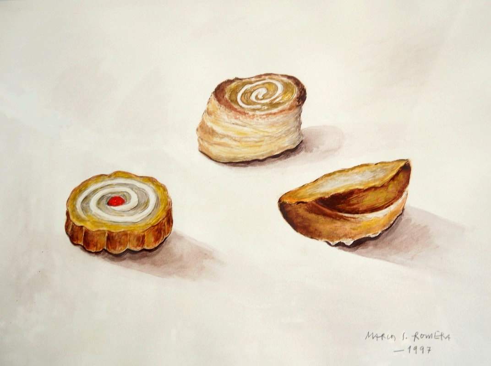

Más de 120 años de historia.
Más de 120 años contigo
Siempre fieles a nuestra tradición familiar de más de 7 generaciones de confiteros, intentamos mejorar día a día para ofrecer siempre la mejor calidad a nuestros clientes.


Elaboración diaria
Nuestros pasteleros elaboran todos nuestros dulces y tartas en el día. Esto nos ha permitido mantener siempre la frescura, calidad y confianza que nos ha caracterizado durante años.
Nuestra historia en imágenes


1 / 10

Artesanos
Todos nuestros productos se elaboran artesanalmente y utilizando las recetas y fórmulas transmitidas generación tras generación en nuestra familia, lo que nos ha permitido permanecer junto a nuestros clientes tanto tiempo.
“Un aroma inconfundible a merengue recién tostado. El penetrante olor de su emborrizado a base de frutos secos triturados tras un tueste exhaustivo. No se deje engañar y nunca acepte que su hojaldre no cruja al morder sus mil y una capas, y que la crema pastelera de su interior inunde suavemente su paladar”
- el Postrechino -

Ingredientes Km.0
Contamos con los mejores ingredientes naturales y de cercanía, como la auténtica miel de flores que nos dan las abejas del Cabezo de la Jara o la deliciosa almendra Marcona de las montañas junto al Valle del Guadalentín.
Conócenos un poco más...


1 / 12
La Confitería
Utiliza nuestro teléfono para realizar tus encargos de tartas, dulces, celebraciones... y para cualquier información que necesites.
Échale un ojo a nuestras redes sociales para estar al tanto de todas las novedades, así como de las fotos que comparten nuestros clientes.
Estamos en:
C/ Mayor nº 44
Puerto Lumbreras, 30890, Murcia
Puerto Lumbreras, 30890, Murcia